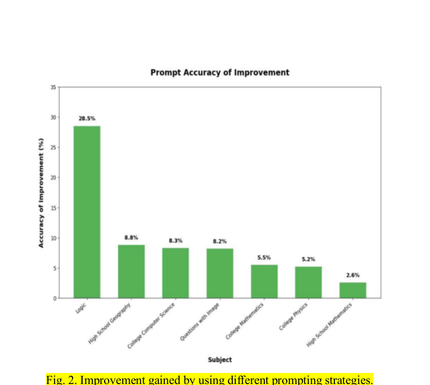

Gemini 2.5 Pro
Reported as the strongest overall performer across the tested tasks, while DeepSeek-V3 showed the lowest overall accuracy in the paper's comparison.
Education technology · LLM evaluation
A comparative study of how current language models perform when academic questions demand not only knowledge, but careful reading, multi-step reasoning, and reliable execution.
The study evaluates ChatGPT-5, Gemini 2.5 Pro, ChatGLM-4.5, and DeepSeek-V3 across mathematics, physics, computer science, and geography. It combines MMLU, LogiQA, and C-Eval with questions drawn from AP, A-Level, Gaokao, and TMUA examinations.
The goal is to understand where models are dependable in educational assessment, where their reasoning breaks down, and how prompt design changes the result.
Most evaluations measure general capability or isolated questions. This work moves closer to a real assessment setting, where a model must maintain accuracy and logical consistency across a complete paper.
That distinction matters for learning tools: a fluent answer is not necessarily a reliable answer.
Reported as the strongest overall performer across the tested tasks, while DeepSeek-V3 showed the lowest overall accuracy in the paper's comparison.
The paper reports the largest improvement when an optimized prompt was used for logic questions instead of a direct-answer prompt.
Models often omitted key words, missed negations, or misunderstood constraints before the reasoning stage even began.
| Examination | GPT-5 | Gemini 2.5 Pro |
|---|---|---|
| Gaokao | 88.50% | 93.37% |
| AP | 57.43% | 58.54% |
| A-Level | 81.99% | 96.46% |
The most useful conclusion is not that one model wins every task. The error profiles suggest complementary strengths: GPT-5 is strong but can lose consistency across long reasoning chains; Gemini is strong on procedural and curriculum-specific tasks but can make computation or formula errors; DeepSeek shows reliable reasoning and computation in some settings but struggles more with semantic parsing; and ChatGLM can be affected by instruction-following constraints.
Together, these patterns point toward a cooperative architecture that routes different parts of a problem to different model components, then uses validation to reduce predictable errors. For education technology, that makes model evaluation a design question: how should a learning system decide when to explain, verify, or ask for help?
More powerful educational AI may come from coordinating specialized systems, rather than searching for one universally best model.

